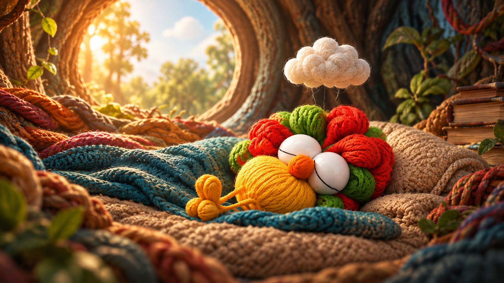

Rulo y el ruido de la rabia
Rulo y el ruido de la rabiaUna historia para comprender la rabia
Rulo y el ruido de la rabia
Rulo es un gallo que vive despierto por las noches y descansa durante el día. A veces algo interrumpe lo que necesita, y una nube de hilo que siempre lo acompaña se va oscureciendo.
En esta historia no necesitamos hacer desaparecer la rabia: aprenderemos a escuchar lo que nos dice y a elegir cómo responder.
Selecciona una edad para adaptar el acompañamiento:
Edad seleccionada: 7–8

MONOCUCOS · Un mundo para todos, donde todos somos uno.Prototipo para revisión · Rabia